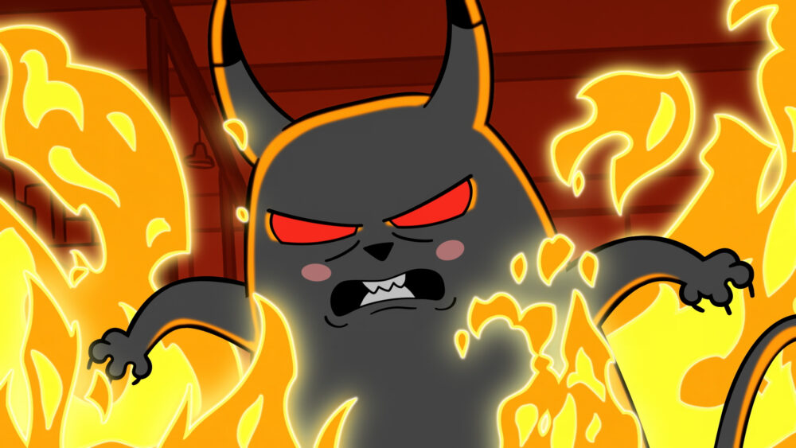

Démont idéznek a 3. emeleti lány msdóban!
Valakik megidézték a sátán macskáját a 3. emeleti lány wc-ben! A tetteseket még nem találták meg.
Valakik megidézték a sátán macskáját a 3. emeleti lány wc-ben! A tetteseket még nem találták meg.
Az NyE osztály új kisállata egy háromfejű kutya! Az osztályból senki nem találja ezt problémának.

Pontosan miért vették fel ezt a madarat az iskolába?
A székek titokzatos eltűnése a II. 48-as teremből.

Furiák Gergő Testnevelés tanár úr újonnan rákapott a szakál növesztésre. Egyre hosszabb lesz a szakálla.
A bírók meggondolták magukat. A 2025-ös Kampány eredmények megváltozik és új nyertest hirdetnek ki.
Találtak egy Puskázó lapot az egyik ozstály évközi angol vizsgálya után. A tettest még nem tlálták meg.
Egy hat fős csapat csupány fél óra alatt elfogyasztotta az összes ételt a menzáról. Másnak már nem jutott semmi.